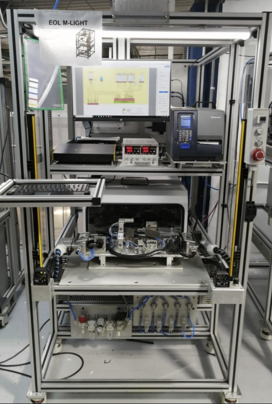

About Us
Established in 1998, Rusemi LLC has been at the forefront of delivering innovative industrial automation, integration, and manufacturing services across Mexico and the USA. Our journey began with a focus on providing specialized programming services and executing minor modifications to existing machinery.
As our expertise grew, so did our service offerings:
- In 2000, we expanded to provide comprehensive automation solutions, including the design and implementation of both manual and automatic assembly lines within the automotive industry.
- By 2006, we had broadened our capabilities to include the development of custom fixtures and manual assembly stations, tailored specifically to the evolving demands of the automotive sector.
- In 2010, we further advanced our service portfolio by venturing into full-scale automation for both manual and automatic assembly lines, reinforcing our commitment to innovation in the automotive industry.
- In 2018, we successfully entered the Honeywell and HBT markets, where we focused on developing automatic assembly lines for their products, servicing various plants with precision and reliability.
Our team comprises a diverse group of highly skilled professionals, including project managers, financial analysts, mechanical engineers, electrical engineers, and software engineers. We are equipped with state-of-the-art tools, including 8 CNC machining centers, a Wenzel Machine Xorbit Model for precise coordinate measurement, a water jet cutting machine, and three advanced 3D printing machines, ensuring we meet the highest standards of quality and efficiency in every project.
Services
At Rusemi, we specialize in the design and construction of advanced equipment that integrates Programmable Logic Controls (PLC) and Computer Systems. We also manufacture industrial parts, nests, and fixtures utilizing Autodesk Inventor technologies. With our vast experience in industrial integration, our services offer a complete solution for the development of sophisticated machinery.
Throughout our history, we have successfully executed a broad range of projects, underscoring our expertise in automation and robotics. Below are some key highlights of our work.
Fire and Smoke Sensor Assembly Lines
2 Lines consisting of 18 and 21 modular stations respectively with conveyor transporting pallets from one station to another having multiple automatic operations from pick and place, assembly, screwdriving, labeling, EOL tests, among others.
Fire Alarm Subassembly
13 Position Rotary Station composed of component revision, bushing press, terminal insertion, terminal press, continuity
test, labeling and packaging where we replaced 4 manual assembly lines providing savings on labor and precision on the assemblies. Manual stations produced 1 assembly every 17 seconds. Our machine produces 1 assembly every 5.5 seconds (improvement of 309% in cycle time).

Headlamp Assembly and Testing
9 Position Conveyor for the assembly and testing of modules of high beam and low beam modules for headlamps for American, European and Japanese models. Assembly consists in manual loading, vision component revision, epoxy application, pick and place, electrical testing and automatic screwing.

EOL Station
EOL station for high beam and low beam modules for headlamps where client provides module specification,
through LIN commmunication (Vector or HSX card) and then through our algorithm, we upload the specification into ECU for intensity and field of illumination testing.

CO2 Laser Cutting Station
8 Laser cuts of ½ inch plus laser engraving in the module lenses after they exit molding.
Headlamp Press Station
Press station for assembly of O-rings, bulbshields and adjusters into the housing for headlamps.
Headlamp Coding and Aiming Station
Headlamp end of line, electrical, temperature and continuity testing and final angle, intensity and field of illumination adjustment.
Glue Cell Station
Glue application through 6 axis robot in housing and lens assembly into housing in a 4 position rotary table.

Continuity Testing Station
A continuity testing station that checks through Dynalab the continuity between connections of components that verifies a correct wiring.